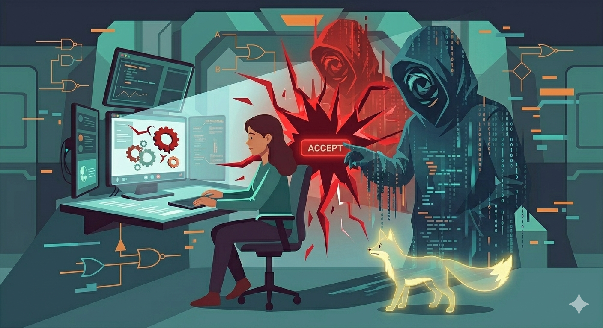

How Hackers Trick People

Hackers don't always rely on advanced technical skills to break into systems. More often, they use social engineering, a method of tricking people into giving away sensitive information like passwords, OTPs, bank details, or account access.
Instead of "hacking computers," they hack human behavior by using emotions such as fear, urgency, curiosity, or trust. Common methods include phishing emails, fake login pages, scam messages, and impersonation (pretending to be a bank, delivery service, or even a friend).
For example, a person may receive a message saying their account will be locked unless they click a link immediately. That pressure can lead someone to enter their details into a fake website, giving hackers full access.
Real-World Application
.png)
Not all cyberattacks rely on breaking into systems—many succeed because people are unknowingly persuaded to give access themselves. In the Philippines, hackers commonly use deception techniques that make their messages appear normal, friendly, or even helpful. These may include pretending to be a friend in need, a recruiter offering a job, or a delivery service asking for confirmation. By blending in with everyday online activities, scammers make it easier for individuals to lower their guard and respond without suspicion.
For instance, the Philippine National Police Anti-Cybercrime Group has reported cases where scammers impersonate known contacts or create fake social media accounts to gain trust. Victims are often convinced to click links, share verification codes, or send money because the request feels personal or urgent. In several incidents, hackers used hacked accounts to message friends and relatives, making the scam even more believable. These situations show that hackers do not just rely on technology—they rely on understanding human behavior, which makes awareness and critical thinking essential in staying safe online.
Author's Reflection
As someone preparing for a future career in business and marketing, I've realized that cybersecurity is not just a technical concern—it is a personal responsibility. In a world where most transactions, communication, and data are handled online, one careless action can lead to serious consequences.
This topic made me more aware that not all threats are obvious. Sometimes, they come in simple messages, familiar names, or situations that feel urgent and real. Because of this, I've learned the importance of slowing down, thinking clearly, and not letting emotions control my decisions online.
In the future, I know that I will be handling sensitive information, whether it involves clients, company data, or financial transactions. Being mindful and cautious will not only protect me but also the people and organizations I work with.
More than anything, this has taught me that staying safe online is a daily habit. It is about being alert, disciplined, and responsible in every click, every message, and every decision.
"Stay curious, stay connected—but most importantly, stay protected."
— Micaella Paguiran